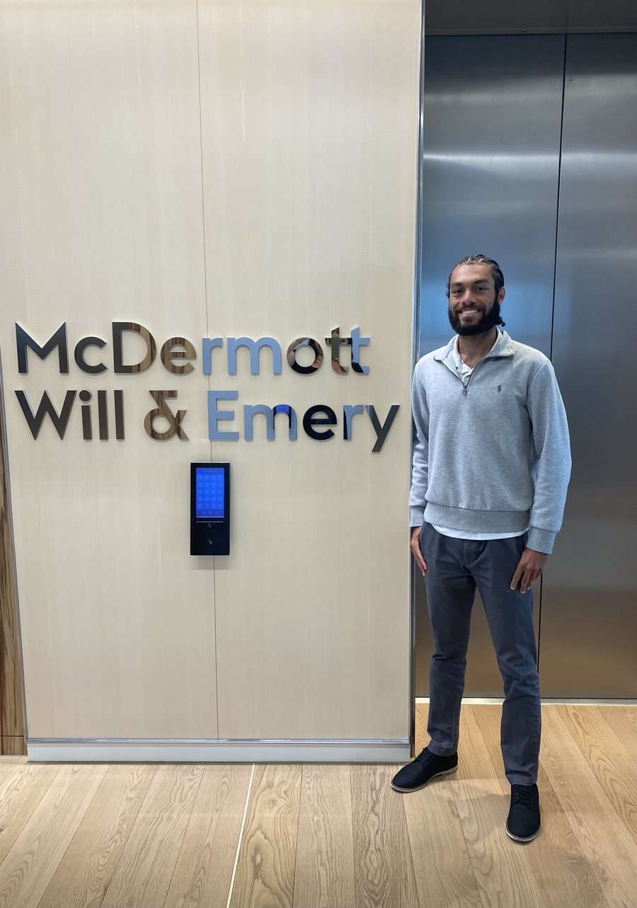

University of Victoria
- UVic Formula Racing (UVFR): combustion (IC) electronic and sensor integration
- UVic Competitive Tennis Team
I've graduated and am currently working. This page covers my earlier roles and my education.
London, UK. Summer 2025.

August 2020 to January 2025.
Chicago, IL. Summer 2024.
September 2022 to September 2023.
Bermuda. January 2020 to August 2020.